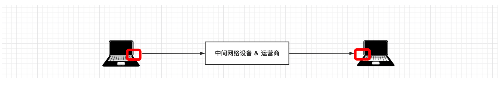
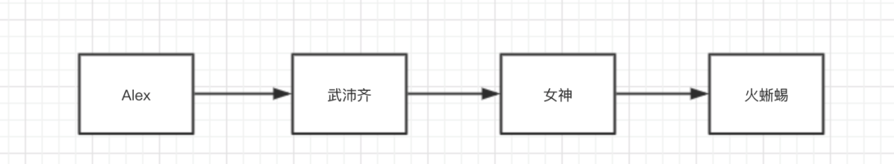
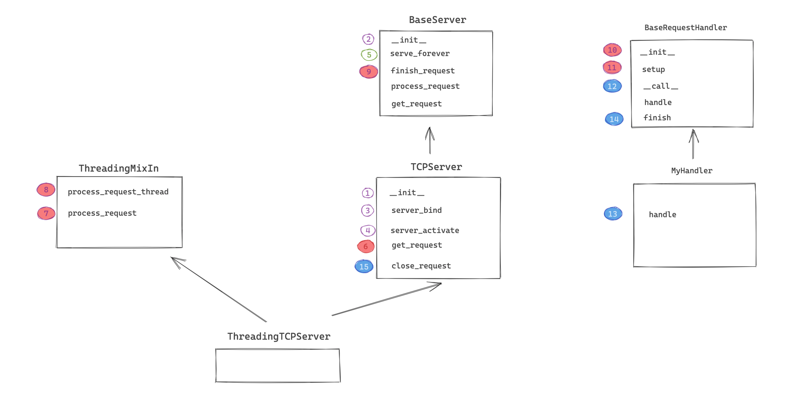
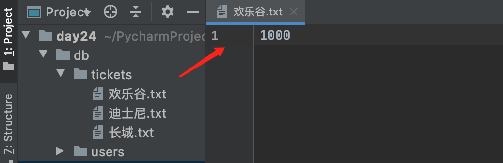
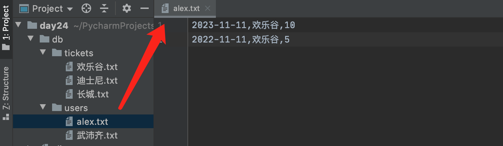

第三阶段考试题（含答案）¶
- 简述面向对象的三大特性
继承，将多个子类中相同的方法放在父类中，子类可以继承父类中的方法（提升重用性）
封装，将多个数据封装到一个对象； 将同类的方法编写（封装）在一个类型中。
多态，天然支持多态，崇尚鸭子模型，不会对类型进行限制，只要具备相应的属性即可，例如：
def func(arg):
arg.send()
不管arg是什么类型，只要具备send方法即可。
- super的作用？
- 实例变量和类变量的区别？
- @staticmethod 和 @classmethod的区别？
@staticmethod，静态方法； 定义时：可以有任意个参数； 执行时：类和对象均可以触发执行。
@classmethod，类方法； 定义时：至少有一个cls参数； 执行时：类和对象均可以触发执行，自动把当前类当做参数传递给cls。
- 简述
__new__和__init__的区别？
- 在Python中如何定义私有成员？
- 请基于
__new__实现一个单例类（加锁）。
import threading
class Singleton(object):
instance = None
lock = threading.RLock()
def __init__(self, name, age):
self.name = name
self.age = age
def __new__(cls, *args, **kwargs):
if cls.instance:
return cls.instance
with cls.lock:
if cls.instance:
return cls
cls.instance = super().__new__(cls)
return cls.instance
obj1 = Singleton('武沛齐', 18)
print(obj1)
obj2 = Singleton('alex', 18)
print(obj2)
# 注意：单例模式，用于用的是第一次创建的那个对象，但对象中的实例变量会被重置。
- 比较以下两段代码的区别
class F1(object):
def func(self,num):
print("F1.func",num)
class F2(F1):
def func(self,num):
print("F2.func",num)
class F3(F2):
def run(self):
F1.func(self,1) # 直接执行F1中的func方法。
obj = F3()
obj.run()
class F1(object):
def func(self,num):
print("F1.func",num)
class F2(F1):
def func(self,num):
print("F2.func",num)
class F3(F2):
def run(self):
super().func(1) # 根据mro的顺序，执行F2中的func方法
obj = F3()
obj.run()
- 补充代码实现
class Context:
def __enter__(self):
print("进入")
return self
def __exit__(self, exc_type, exc_val, exc_tb):
print("出去")
def do_something(self):
print("执行")
with Context() as ctx:
ctx.do_something()
-
简述 迭代器、可迭代对象 的区别？
-
什么是反射？
-
简述OSI七层模型。
OSI七层模型分为：应用层、表示层、会话层、传输层、网络层、数据连路程、物理层，其实就是让各层各司其职，完成各自的事。 以Http协议为例，简述各层的职责： 应用层，规定数据传格式。 "GET /s?wd=你好 HTTP/1.1\r\nHost:www.baidu.com\r\n\r\n" 表示层，对应用层数据的编码、压缩（解压缩）、分块、加密（解密）等任务。 "GET /s?wd=你好 HTTP/1.1\r\nHost:www.baidu.com\r\n\r\n你好".encode('utf-8') 会话层，负责与目标建立、中断连接。 传输层，建立端口到端口的通信，其实就确定双方的端口信息。 数据："GET /s?wd=你好 HTTP/1.1\r\nHost:www.baidu.com\r\n\r\n你好".encode('utf-8') 端口： - 目标：80 - 本地：6784 网络层，标记IP信息。 数据："GET /s?wd=你好 HTTP/1.1\r\nHost:www.baidu.com\r\n\r\n你好".encode('utf-8') 端口： - 目标：80 - 本地：6784 IP： - 目标IP：110.242.68.3 - 本地IP：192.168.10.1 数据连路程，设置MAC地址信息 数据："POST /s?wd=你好 HTTP/1.1\r\nHost:www.baidu.com\r\n\r\n你好".encode('utf-8') 端口： - 目标：80 - 本地：6784 IP： - 目标IP：110.242.68.3（百度） - 本地IP：192.168.10.1 MAC： - 目标MAC：FF-FF-FF-FF-FF-FF - 本机MAC：11-9d-d8-1a-dd-cd 物理层，将二进制数据在物理媒体上传输。 -
UDP和TCP的区别。
-
简述TCP三次握手和四次挥手的过程。
创建连接，三次握手： 第一次：客户端向服务端请求，发送：seq=100（随机值）； 第二次：服务端接收请求，然后给客户端发送：seq=300（随机值）、ack=101（原来客户端口发来请求的seq+1） 第三次：客户接接收请求，然后给服务端发送：seq=101（第2次返回的值）、 ack=301（第2次seq+1） 第1、2次过程，客户端发送了数据seq，服务端也回给了seq+1，证明：客户端可以正常收发数据。此时，服务端不知客户端是否正常接收到了。 第2、3次过程，服务端发送了数据seq，客户端也返回了seq+1，证明：服务端可以正常收发数据。 断开连接，四次挥手：（任意一方都可以发起） 第一次：客户端向服务端发请求，发送：<seq=100><ack=300> （我要与你断开连接） 第二次：服务端接收请求，然后给客户端发送：<seq=300><ack=101> （已收到，可能还有数据未处理，等等） 第三次：服务端接收请求，然后给客户端发送：<seq=300><ack=101> （可以断开连接了） 第四次：客户端接收请求，然后给服务端发送：<seq=101><ack=301> （好的，可以断开了） -
简述你理解的IP和子网掩码。
-
端口的作用？
-
什么是粘包？如何解决粘包？
两台电脑在进行收发数据时，其实不是直接将数据传输给对方。 - 对于发送者，执行 `sendall/send` 发送消息时，是将数据先发送至自己网卡的 写缓冲区 ，再由缓冲区将数据发送给到对方网卡的读缓冲区。 - 对于接受者，执行 `recv` 接收消息时，是从自己网卡的读缓冲区获取数据。 所以，如果发送者连续快速的发送了2条信息，接收者在读取时会认为这是1条信息，即：2个数据包粘在了一起。 解决思路： 双方约定好规则，在每次收发数据时，都按照固定的 数据头 + 数据 来进行处理数据包，在数据头中设置好数据的长度。
-
IO多路复用的作用是什么？
-
简述进程、线程、协程的区别。
-
什么是GIL锁？其作用是什么？
-
进程之间如何实现数据的共享？
-
已知一个订单对象（tradeOrder）有如下字段：
字段英文名 中文名 字段类型 取值举例 nid ID int 123456789 name 姓名 str 张三 items 商品列表 list 可以存放多个订单对象 is_member 是否是会员 bool True 商品对象有如下字段：
字段英文名称 中文名 字段类型 取值 id 主键 int 987654321 name 商品名称 str 手机 请根据要求实现如下功能：
- 编写相关类。
- 创建订单对象并根据关系关联多个商品对象。
- 用json模块将对象进行序列化为JSON格式（提示：需自定义
JSONEncoder）。
import json class ObjectJsonEncoder(json.JSONEncoder): def default(self, o): if type(o) in {Order, Goods}: return o.__dict__ #将对象里的变量按dict返回 else: return o class Order(object): def __init__(self, nid,name,is_member): self.nid = nid self.name = name self.is_member = is_member self.items = [] class Goods(object): def __init__(self, id, name): self.id = id self.name = name od = Order(666,"武沛齐",True) od.items.append( Goods(1, "汽车") ) od.items.append( Goods(2, "美女") ) od.items.append( Goods(3, "游艇") ) data = json.dumps(od, cls=ObjectJsonEncoder) print(data) -
基于面向对象的知识构造一个链表。

注意：每个链表都是一个对象，对象内部均存储2个值，分为是：当前值、下一个对象 。
class Node(object): def __init__(self, value, _next): self.value = value self.next = _next # 手动创建链表 v4 = Node("火蜥蜴",None) v3 = Node("女神",v4) v2 = Node("武沛齐",v3) v1 = Node("alex",v2) # 根据列表创建链表 data_list = ["alex", "武沛齐", "女神", "火蜥蜴"] root = None for index in range(len(data_list) - 1, -1, -1): # [3,2,1,0] node = Node( data_list[index] , root) root = node -
读源码，分析代码的执行过程。

- socket服务端
import socket import threading class BaseServer: def __init__(self, server_address, request_handler_class): # ("127.0.0.1", 8000), MyHandler -> 类 self.server_address = server_address self.request_handler_class = request_handler_class def serve_forever(self): while True: # 等待客户端来连接 # conn,address = socket.accept() request, client_address = self.get_request() self.process_request(request, client_address) def finish_request(self, request, client_address): # MyHandler -> 类 # MyHandler() -> MyHandler.__init__(conn,address, self) # MyHandler.__call__方法 self.request_handler_class(request, client_address, self)() def process_request(self, request, client_address): pass def get_request(self): return "傻儿子", "Alex" class TCPServer(BaseServer): address_family = socket.AF_INET socket_type = socket.SOCK_STREAM request_queue_size = 5 allow_reuse_address = False def __init__(self, server_address, request_handler_class, bind_and_activate=True): # ("127.0.0.1", 8000), MyHandler BaseServer.__init__(self, server_address, request_handler_class) self.socket = socket.socket(self.address_family, self.socket_type) self.server_bind() self.server_activate() def server_bind(self): self.socket.setsockopt(socket.SOL_SOCKET, socket.SO_REUSEADDR, 1) self.socket.bind(self.server_address) # （IP、端口） self.server_address = self.socket.getsockname() def server_activate(self): self.socket.listen(self.request_queue_size) def get_request(self): return self.socket.accept() def close_request(self, request): request.close() class ThreadingMixIn: def process_request_thread(self, request, client_address): self.finish_request(request, client_address) self.close_request(request) def process_request(self, request, client_address): t = threading.Thread(target=self.process_request_thread, args=(request, client_address)) t.start() class ThreadingTCPServer(ThreadingMixIn, TCPServer): pass class BaseRequestHandler: def __init__(self, request, client_address, server): # conn self.request = request self.client_address = client_address self.server = server self.setup() def __call__(self, *args, **kwargs): try: self.handle() finally: self.finish() def setup(self): pass def handle(self): pass def finish(self): pass class MyHandler(BaseRequestHandler): def handle(self): print(self.request) # conn self.request.sendall(b'hahahahah...') # 在server封装了点值、然后又创建socket服务端 server = ThreadingTCPServer( ("127.0.0.1", 8000), MyHandler ) server.serve_forever()- socket客户端
```python import socket
# 1. 向指定IP发送连接请求 client = socket.socket() client.connect(('127.0.0.1', 8000)) # 向服务端发起连接（阻塞）10s
# 2. 连接成功之后，发送消息 client.sendall('hello'.encode('utf-8'))
# 3. 等待，消息的回复（阻塞） reply = client.recv(1024) print(reply)
# 4. 关闭连接 client.close() ```
-
请自己基于socket模块和threading模块实现 门票预订 平台。（无需考虑粘包）
-
用户作为socket客户端
-
输入
景区名称，用来查询景区的余票。 -
输入
景区名称-预订者-数量，例如：欢乐谷-alex-8，用于预定门票。 -
socket服务端，可以支持并发多人同时查询和购买（为每个客户度创建一个线程）。
-
服务端数据存储结构如下：
db ├── tickets │ ├── 欢乐谷.txt # 内部存储放票数量 │ ├── 迪士尼.txt │ └── 长城.txt └── users ├── alex.txt # 内部存储次用户预定记录 └── 武沛齐.txt # 注意：当用户预定门票时，放票量要减去相应的数量（变为0之后，则不再接受预定）。 约定时会存在多个线程同时操作文件去修改数值。

-